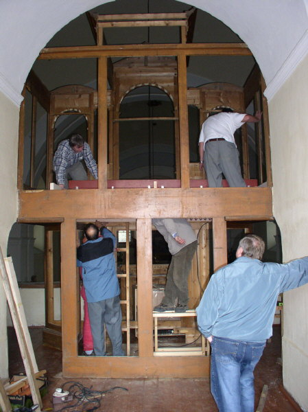

Stavba nástroje probíhala ve vsetínské dílnì v prùbìhu
celé první poloviny roku. Byly vyrobeny všechny vzdušnice, mìchy, hrací
stùl a vše bylo zkušebnì propojeno tak, aby mohl bıt nástroj vyzkoušen
a provedena základní intonace a pøedladìní píšal. |
Vzdušnice prvního manuálu s píšalami pøi zkouškách nástroje v dílnì. Odzkoušenı nástroj byl rozebrán, zabalen a pøipraven na 250 kilometrovou cestu do Brtnice. 19. záøí bylo hotovo a mohlo se zaèít nakládat. Souèástí jsou stovky, nìkteré malé, jiné velké a poøádnì tìké… |
Nakládání nástroje ve Vsetínì. |
Nejtìší fází dopravy nástroje nebyl jeho pøevoz,
ale vyzvednutí na kùr v brtnickém kostele. Hrana zábradlí je ve vıšce
6 m, monosti pouití mechanizace silnì omezené. S vyuitím vìdomostí
našich pøedkù (naklonìná rovina) a síly svalù byl celı nástroj pøestìhován
a vzdušnice usazena do skøínì bìhem cca dvou hodin: |
Pøíprava vzdušnice prvního manuálu k vyzvednutí a prùbìh zvedání. Pøestoe je vìtšina demontovatelnıch souèástí odstranìna, váí tento díl pøes 300 kg! |
Ve
skøíni nástroje musela bıt vzdušnice pøesnì usazena na nosníky. Manipulace
s ní byla velmi obtíná nejen vzhledem k její hmotnosti, ale také z dùvodu
omezeného prostoru, absenci místa pro stoupnutí atd. Pøestoe umístìní
tohoto dílu nemohlo bıt pøedem odzkoušeno, vše pasovalo na milimetry pøesnì. V následujících dnech pokraèovala instalace varhan montáí vzduchového hospodáøství, traktury, elektroinstalace, ventilátoru a dalších vzdušnic. Teprve pak bylo moné zaèít vkládat první píšaly, intonovat a ladit. |

Ve spodní èásti (postamentu) skøínì je kompletní
vzduchové hospodáøství nástroje. To se skládá ze zdroje stlaèeného vzduchu
(elektrického ventilátoru), jeho zásobníkù (dvojice mìchù pro první manuál
a druhı manuál s pedálem samostatnì ve spoleèné skøíni) a regulace tlaku
(samostatnıch regulátorù pro kadı mìch).
|
V
nástroji je pouit ventilátor maïarské vıroby, vyznaèující se mimoøádnì
tichım chodem. Má tøífázovı asynchronní elektromotor s kluznımi loisky
o vıkonu pouze 350W a vestavìnou tepelnou ochranu. |
Celá
elektroinstalace nástroje je umístìna v boèní èásti postamentu. V horní
èásti je vıkonovı modul pro øízení elektromagnetù ve vzdušnici, v dolní
èásti napájecí zdroj 12 V a obvody spínání a ochrany elektromotoru
ventilátoru. Z praktickıch a bezpeènostních dùvodù je celı stùl (vèetnì
osvìtlení pedálu) napájen pouze malım napìtím (12 V støídavıch i
stejnosmìrnıch). |
Vzdušnice a píšaly. |
Pohled na vzdušnice seshora, dlouhé tmavší lišty s otvory jsou zásuvky. |
Pøesun zásuvek zajišují tahací mìchy (na obrázku
je detail napojení høídelek mìchù na zásuvky). Toto øešení je jednodušší
z hlediska zapojení traktury (poadavku na elektrickı pøíkon) ne pøímé
ovládání zásuvek tyèovımi elektromagnety a ve srovnání s nimi i ménì hluèné.
Mìchy jsou napájeny plnım tlakem z ventilátoru. |

Pohled na tahací mìchy zespodu, øízení otvírání a
zavírání zajišují páèkové elektromagnety, ovládající cívky (ploché ventily). |
Osazení píšalnic s píšalovımi stolièkami na vzdušnici
prvního manuálu. |

Prospektové zinkové píšaly jsou pro sjednocení a
vylepšení vzhledu støíkány støíbøenkou. |
Levá èást prospektu a vzdušnice s tahacími mìchy zásuvek. |

V zadní èásti varhan jsou døevìné píšaly nejniší
oktávy pedálu (12 píšal na samostatné Unitové vzdušnici). |

Celkovı pohled do píšalištì hotovıch varhan. Vlevo
prospekt, vzdušnice prvního manuálu, lávka (chodník) pro ladìní, vzdušnice
druhého manuálu a pedálu a úplnì vpravo vzdušnice pro 12 píšal kontraoktávy
šestnáctistopového rejstøíku pedálu. |
|
Slavnostní ehnání novıch varhan 23.10.2005, P. Jaroslav
Svoboda.
A slouí novı nástroj Bohu ke chvále a Brtnici ku prospìchu. Ostrava, listopad 2005
Pohled od varhan západním oknem kostela na zámeckı kostel v Brtnici. Varhany Vaculín Opus 7. – Jiøí VACULÍN,
varhanáøskı mistr ze Vsetína |
Na pøedchozích stránkách naleznete úvod a dispozici nástroje a jeho podrobnı popis. Na samostatné stránce pak nìkolik fotografií a dispozici barokních varhan v zámeckém kostele blahoslavené Juliany. ©2005 - Ing. Petr Bernat. |


 Ventilátor
je umístìn v tlumící skøíni na podlaze kùru. Vzduch z nìj o tlaku pøes
120 mm vodního sloupce je veden vzduchovodem kruhového prùøezu vzhùru
k mìchùm pøes regulátory. Ty udrují stabilní tlak 70 mm v horním, plovákovém
mìchu pro první manuál a 80 mm v dolním, klínovém mìchu pro druhı manuál.
Pøed regulátory je ještì odebírán vzduch o plném tlaku pro „pohon“ tahacích
mìchù pro posun zásuvek ve vzdušnici prvního manuálu. Pøímo na mìchu prvního
manuálu je vıpustné tremolo.
Ventilátor
je umístìn v tlumící skøíni na podlaze kùru. Vzduch z nìj o tlaku pøes
120 mm vodního sloupce je veden vzduchovodem kruhového prùøezu vzhùru
k mìchùm pøes regulátory. Ty udrují stabilní tlak 70 mm v horním, plovákovém
mìchu pro první manuál a 80 mm v dolním, klínovém mìchu pro druhı manuál.
Pøed regulátory je ještì odebírán vzduch o plném tlaku pro „pohon“ tahacích
mìchù pro posun zásuvek ve vzdušnici prvního manuálu. Pøímo na mìchu prvního
manuálu je vıpustné tremolo. Stavba
nástroje na místì trvala varhanáøskému mistrovi Jiøímu Vaculínovi a
jeho pomocníkùm Petru Bernatovi (elektro a traktura) a Janu Markovi
(ladìní a intonace) pøiblinì dva tıdny. Bìhem této doby byl nástroj
sestaven, naintonován a naladìn. 23. øíjna roku 2005, v den vıroèí svìcení
chrámu, byly varhany slavnostnì poehnány a pøedány brtnické farnosti.
Pøi této pøíleitosti pøednesla na novı nástroj koncert prof. Irena
Chøibková, varhanice baziliky sv. Jakuba v Praze.
Stavba
nástroje na místì trvala varhanáøskému mistrovi Jiøímu Vaculínovi a
jeho pomocníkùm Petru Bernatovi (elektro a traktura) a Janu Markovi
(ladìní a intonace) pøiblinì dva tıdny. Bìhem této doby byl nástroj
sestaven, naintonován a naladìn. 23. øíjna roku 2005, v den vıroèí svìcení
chrámu, byly varhany slavnostnì poehnány a pøedány brtnické farnosti.
Pøi této pøíleitosti pøednesla na novı nástroj koncert prof. Irena
Chøibková, varhanice baziliky sv. Jakuba v Praze.